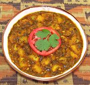

|
Potato Curry, UgandaUganda - Curry ya Viazi | ||||
| Makes: Effort: Sched: DoAhead: |
*** hrs Yes |
A fine curry when you need a dish both robust and vegetarian. It shows influence from potato curries popular in India. The recipe is authentically African, but there's nothing in it that's native to Africa. | |||
|
1 7 4 1/3 1/4 1/4 1/4 ------- 1 1/2 1 1 ------- 1 1 8 ------- ar |
# oz cl in c c c --- t t t t --- T c oz --- |
Potatoes (1) Onions Garlic Ginger Cilantro Parsley Lemon Juice -- Spicing Turmeric Chili Powder (2) Cinnamon Salt ------------- Oil Water Tomato Sauce (3) -- Serve with Steamed Rice -or- Chapatis |
Prep - (25 min)
|